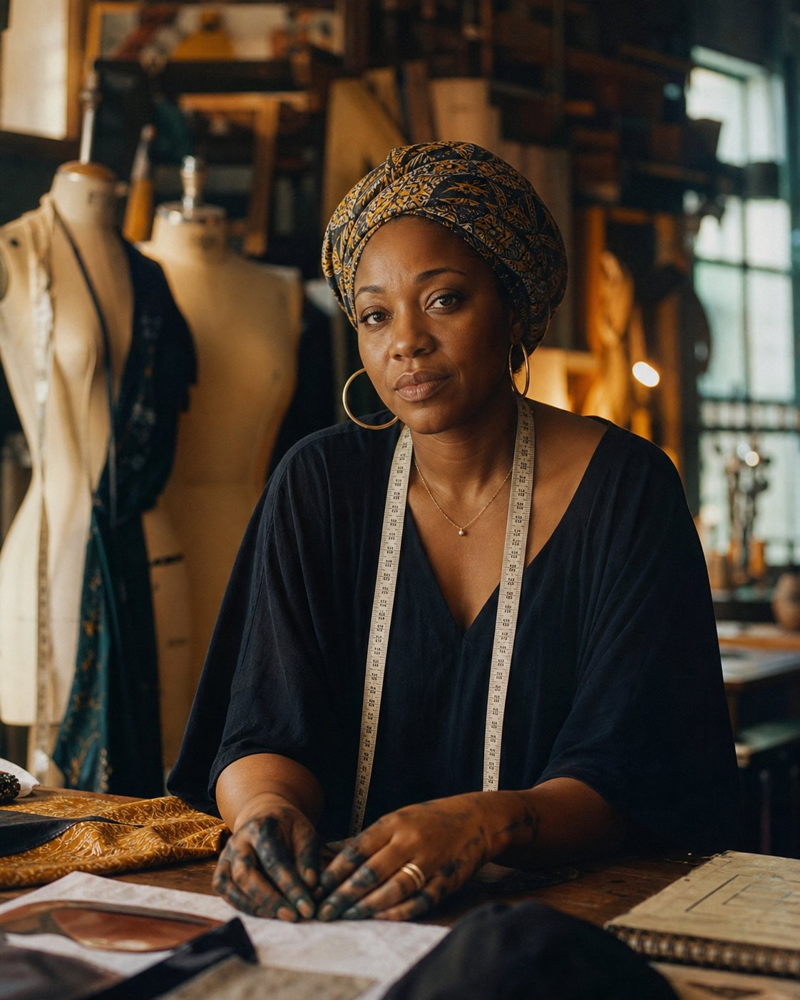
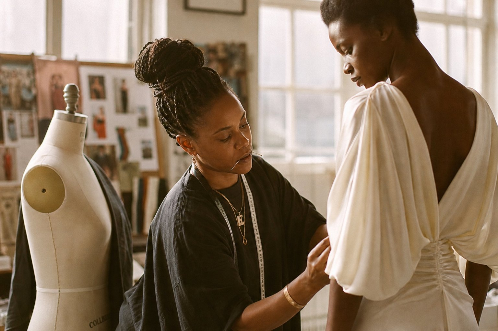
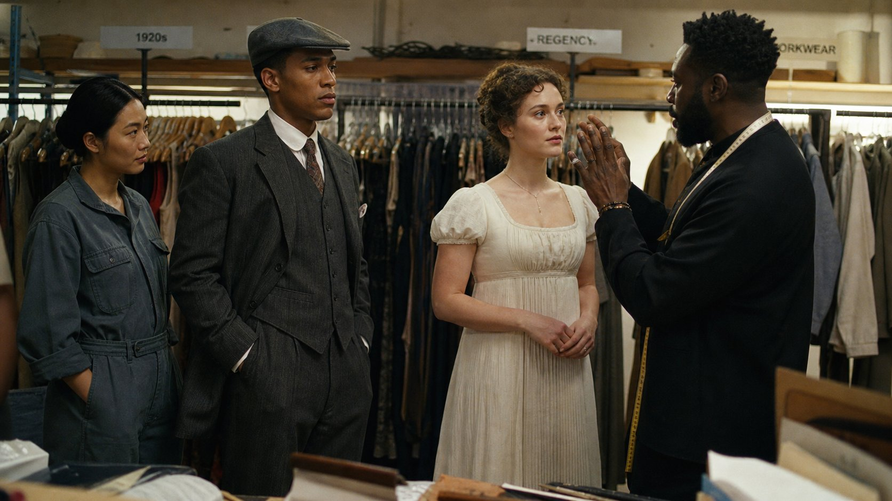
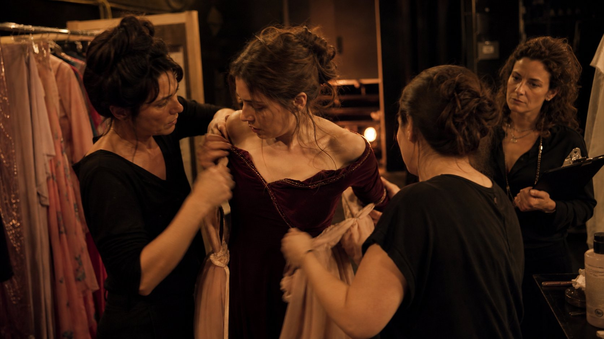
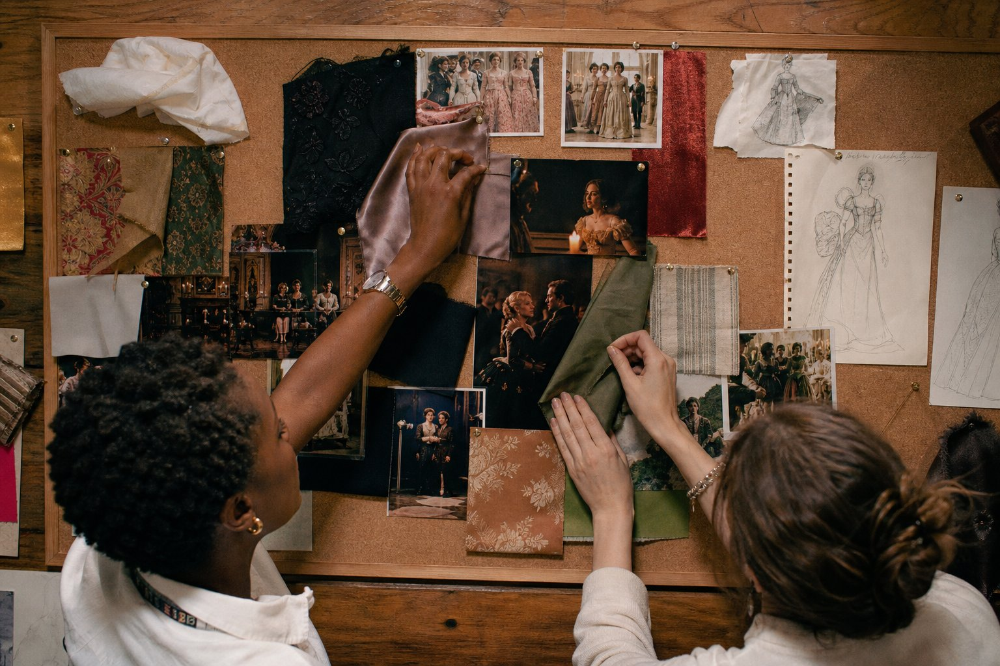
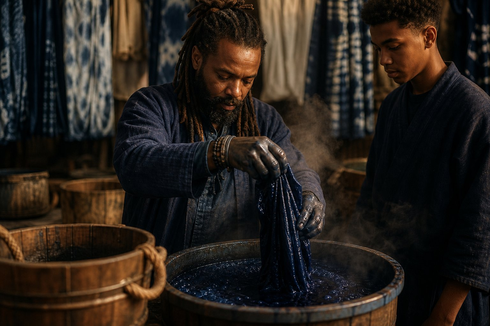
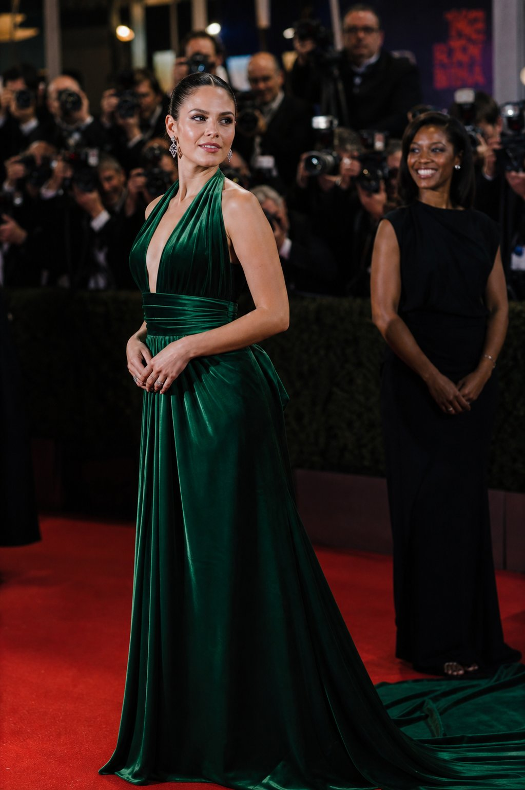
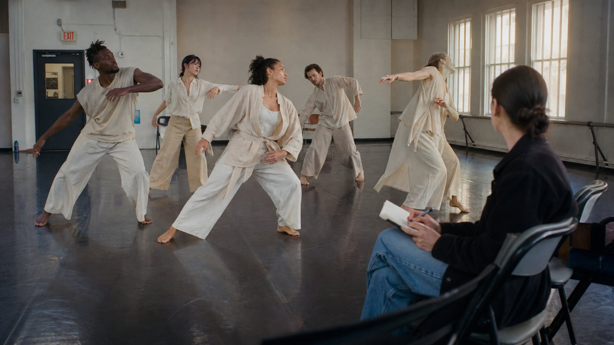
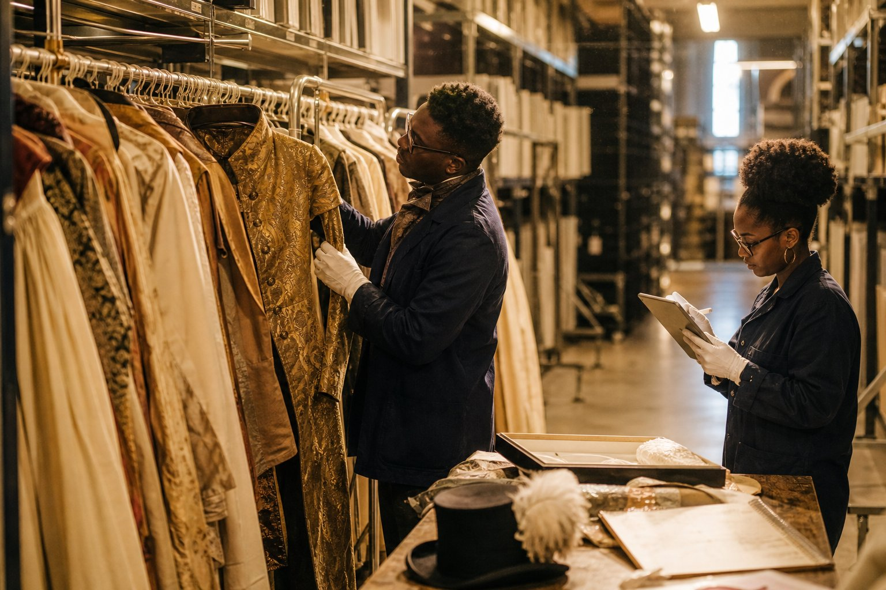
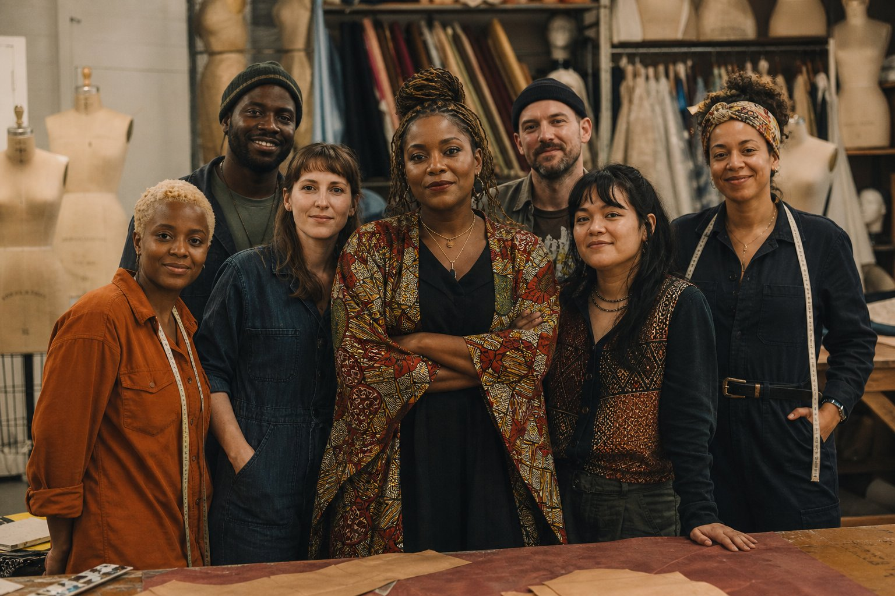

Nigerian-British Nadia, late 30s, Ankara headwrap, measuring tape, dye-stained hands. Dress forms behind. EXACT brief match. 4:5

Nadia pinning ivory silk gown on Black model, pins in mouth, atelier window light. Mood board behind.

3 actors: 1920s suit, Regency gown, linen workwear. Racks labeled 1920s / REGENCY / WORKWEAR.

Burgundy velvet to blush chiffon, backstage wings, dressers frantic, Nadia right with clipboard.

Nadia + assistant pinning silk/velvet/linen to cork board with Bridgerton stills & sketches. Overhead hands.

Indigo vat dyeing, blue-stained hands, steam, shibori fabrics hanging. Master + apprentice.

Actress in emerald silk velvet Nadia gown, red carpet flash bulbs, Nadia smiling behind in black.

5 diverse dancers in flowing oatmeal linen, movement test. Nadia watching with notebook, right foreground.

Gold brocade Regency coat pulled from vault, white gloves, iPad logging. Period costume archive aisle.

Nadia center in Ankara print kimono, 6-person diverse costume team, dress forms + fabric wall. Perfect about-page group.